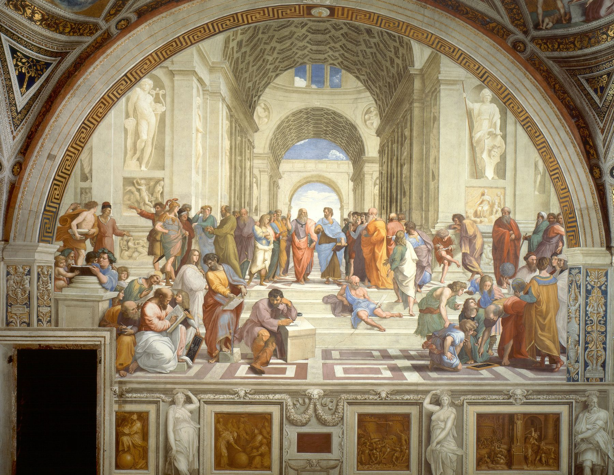

One painting holds the whole practice. Raphael put dozens of thinkers in one room, each doing a different kind of work. Choose a figure to see the commission that matches it.

I have spent the last few years inside companies at the point where an idea has to become a system: a product, a team, a process that holds. Below I set out, in order, what I can do for you, each with the work that proves it. Open any point to see it.
In which ideas are diagnosed, operations are designed, and the things they need are built. In six chapters.
Manchester · MMXXVI Open the bookSet in Garamond, after the types Claude Garamond cut in Paris in the 1530s and 1540s. Written, designed and built by the author, who will answer every letter.